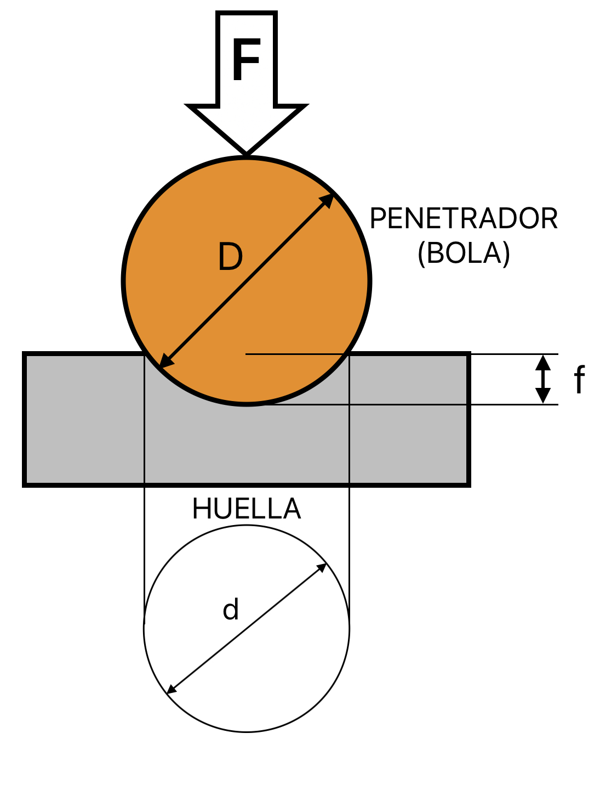
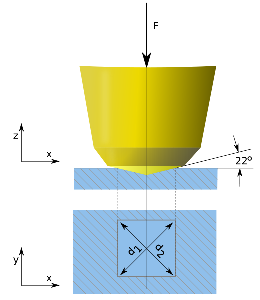
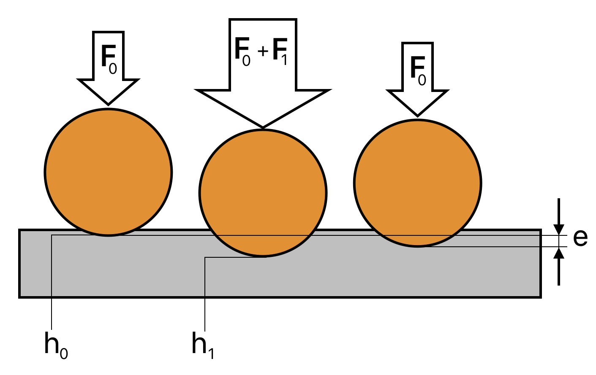

Ensayos de dureza
El ensayo de dureza es un elemento clave en múltiples procedimientos de control de calidad y en trabajos de I+D. El ensayo de dureza se define así:
| Un ensayo de dureza es una evaluación que permite determinar la resistencia de un material a la deformación permanente mediante la penetración de otro material más duro. |
Por lo general, un ensayo de dureza consiste en presionar un objeto (penetrador) con unas medidas y una carga concretos sobre la superficie del material a evaluar. La dureza se determina al medir la profundidad de penetración del penetrador o bien midiendo el tamaño de la impresión dejada por el penetrador. Existen múltiples tipos de ensayos de dureza:
- Los ensayos de dureza que miden la profundidad de penetración de dicho objeto son: Rockwell, ensayo de penetración instrumentado, y dureza de penetración de bola.
- Los ensayos de dureza que miden el tamaño de la impresión dejada por el penetrador son: Vickers, Knoop y Brinell.
Los tres que están destacados en el texto son los que estudiaremos con detalle nosotros este curso y cuyo análisis vemos a continuación:
Ensayo Brinell

Se mide la dureza del material presionando sobre este una bola de un material muy duro (acero templado para materiales más blandos o carburo de tungsteno para materiales más duros) con una fuerza determinada y midiendo el tamaño de la huella que deja sobre el material.
El valor numérico de la dureza Brinell se obtiene dividiendo la fuerza empleada, expresada en kgf, entre la superficie de la huella dejada en el material, expresada en mm2:
|
\[HB=\frac{F}{S}\] |
La huella dejada por la bola sobre la superficie tiene forma de casquete esférico. Se puede calcular la superficie de dicha huella conociendo el diámetro del penetrador (D) y su profundidad (f) mediante la fórmula \(S=\pi D f\).
Al realizar el ensayo el diámetro de la huella es muy fácil de medir, pero la profundidad no podemos medirla de forma precisa. Por lo tanto, es necesario calcular la profundidad de la huella a partir de su diámetro, que es lo que podemos medir. Aplicando el Teorema de Pitágoras podemos deducir la siguiente expresión para la profundidad de la huella:
| \[f=\frac{D}{2}-\sqrt{\left ( \frac{D}{2} \right )^{2}-\left ( \frac{d}{2} \right )^{2}}=\frac{D-\sqrt{D^{2}-d^{2}}}{2}\] |
Donde D es el diámetro del penetrador (bola) y d es el diámetro de la huella. Sustituyendo esta expresión, podemos calcular la superficie de la huella sabiendo únicamente su diámetro con la siguiente fórmula:
| \[S=\pi D f= \frac{\pi D\left (D-\sqrt{D^{2}-d^{2}} \right )}{2}\] |
Por lo tanto, la expresión de la dureza Brinell quedaría, finalmente:
| \[HB=\frac{F}{S}= \frac{2F}{\pi D\left (D-\sqrt{D^{2}-d^{2}} \right )}\] |
Aquí puedes ver un vídeo de un ensayo Brinell real. Está en inglés, pero se pueden activar los subtítulos automáticos y traducir al español:
Ventajas e inconvenientes del ensayo Brinell
Ventajas
- Es un método de bajo coste para medir la dureza de un gran número de materiales.
- Este ensayo usa un penetrador de tamaño relativamente grande, por lo que es el método preferido para materiales heterogéneos (en los que la dureza puede variar de grano a grano) porque nos da la dureza media de los diferentes granos afectados por el penetrador. Por ejemplo, es el ensayo preferido para las fundiciones.
- Huellas comparativamente grandes, que son más fáciles de medir que las huellas Vickers, más bien pequeñas.
- La superficie de la pieza puede ser rugosa.
Inconvenientes
- Debido al gran tamaño de la bola utilizada, solo se puede realizar el ensayo en piezas planas, no se puede usar en superficies esféricas ni cilíndricas.
- La superficie de la probeta debe estar en buen estado, ya que la indentación se mide ópticamente. Esto significa que hay que preparar el lugar del ensayo.
- Las piezas también deben tener un grosor mínimo (unas 10 veces la profundidad de la huella producida)
- El método es lento (en comparación, por ejemplo, con el método Rockwell)
Normalización del ensayo Brinell
El ensayo está normalizado y, para que sea válido, tiene que haber una relación entre la fuerza aplicada (F) y el diámetro de la bola utilizada (D). En concreto, siempre tiene que cumplirse que:
| \[F=K \cdot D^{2}\] |
Donde K es una constante, expresada en kgf/mm2, que depende del material a ensayar y es mayor cuanto mayor sea el material. Por ejemplo, para las maderas K = 1, para metales blandos como aluminio o cobre K = 5 y para los aceros K = 30. Los diámetros de las bolas están normalizados. Una vez seleccionado el diámetro de la bola, la fuerza a aplicar se calcula con la expresión anterior.
Para que el resultado del ensayo sea válido, también debe cumplirse que la huella dejada no sea ni demasiado pequeña ni demasiado grande. En concreto, el diámetro de la huella debe tener un tamaño intermedio entre una cuarta parte del diámetro de la bola y la mitad del diámetro de la bola. Es decir, debe cumplirse:
| \[\frac{D}{4}\le d\le \frac{D}{2}\] |
La dureza Brinell se expresa también de una forma normalizada, indicando varios valores que deben llevar un orden determinado para que queden identificados. En concreto, hay que indicar, por este orden:
- El valor de la dureza, expresado en kgf/mm2, y redondeado a entero (salvo si es menor de 10, que pude llevar un decimal)
- Las letras "HB", para indicar que se ha utilizado el ensayo Brinell. Es posible que os encontréis durezas expresadas con "HBS" (indica que se ha utilizado una bola de acero) o con "HBW" (bola de carburo de tungsteno).
- El diámetro de la bola utilizada, en mm.
- El valor de la fuerza aplicada, en kgf.
- El tiempo durante el que se ha aplicado la fuerza, en segundos, solo si ha sido superior a 15 s.
Por ejemplo, si nos dan un valor de dureza con la expresión:
120 HBW 10/3000/30
Significa que el material tiene una dureza de 120 kgf/mm2 que se ha medido mediante un ensayo Brinell, utilizando una bola de carburo de tungsteno de 10 mm de espesor y aplicando una fuerza de 3000 kgf durante 30 s.
Simulador de ensayo Brinell
Os dejo un pequeño simulador de ensayo Brinell hecho con Snap! (un lenguaje parecido a Scratch). Se puede elegir un material a ensayar (lo que establece la K del ensayo) y un diámetro de bola normalizado (esto también establecerá automáticamente la F a utilizar). Modificando la dureza del material con el deslizador, se puede ver cómo cambia el diámetro de la huella dejada por el penetrador.
Ensayo Vickers
Al igual que el ensayo Brinell, se busca crear una indentación en el material a ensayar apretando un penetrador sobre la superficie del mismo con una fuerza controlada. La dureza se calcula exactamente igual, dividiendo la fuerza, expresada en kgf, entre la superficie de la huella, expresada en mm2:
|
\[HV=\frac{F}{S}\] |

La diferencia fundamental es que, en el caso del ensayo Vickers, el penetrador no es una bola sino una pieza piramidal de diamante con base cuadrada y un ángulo de 136º. Por lo tanto, la huella tiene forma de pirámide y su superficie es la suma de cuatro triángulos.
Como puede que la huella no quede perfectamente simétrica y se mide mediante métodos ópticos, hay que tener en cuenta las posibles desviaciones. Por eso, en lugar de medir los lados de la huella, se miden las dos diagonales y se calcula su media aritmética, obteniendo así un valor más exacto de la diagonal d. Aplicando trigonometría básica, podemos expresar la superficie de la huella en función de su diagonal mediante esta expresión:
| \[S=\frac{d^{2}}{2 \sin 68^{0}}\] |
Por lo tanto, sustituyendo en la expresión de la dureza Vickers, obtenemos la fórmula final del cálculo de la dureza Vickers:
| \[HV=\frac{2F \sin 68^{0}}{d^{2}}\simeq \frac{1,8544F}{d^{2}}\] |
donde la fuerza F va en kgf y el diámetro d en mm.
El ensayo Vickers puede realizarse con la misma máquina que se utiliza para el ensayo Brinell. Tan solo hay que cambiar el penetrador. De hecho, os dejo un vídeo de un ensayo Vickers realizado con la misma máquina que aparece en el vídeo del ensayo Brinell:
Ventajas e inconvenientes del ensayo Vickers
Ventajas
- La posibilidad de usar cargas desde unos gramos (microdureza) hasta los 120 kgf permite una amplia gama de utilidad.
- Se puede usar en piezas esféricas o cilíndricas.
- Las probetas no necesitan tener un grosor tan grande como en el ensayo Brinell.
- Se usa un mismo penetrador para todos los ensayos.
Inconvenientes
- El método es lento (en comparación con el método Rockwell)
- La superficie de la probeta debe estar en buen estado, ya que la indentación se mide ópticamente.
El ensayo Vickers se está convirtiendo en el método preferido para medir durezas en todo tipo de materiales.
Normalización del ensayo Vickers
El ensayo Vickers, como todos los demás ensayos, está normalizado, empezando por la forma del penetrador (pirámide de 168º) y su material (diamante).
Además, las fuerzas a aplicar también están normalizadas, empezando en 1 gf para microdurezas y yendo desde 5 hasta 120 kgf para macrodurezas (variando en intervalos de 5 en 5 kgf).
La expresión normalizada de la dureza Vickers es más simple que la de la dureza Brinell, debido al uso de un único penetrador. Hay que indicar:
- El valor de la dureza, en kgf/mm2, redondeado a entero.
- Las letras "HV", para indicar que es un ensayo de dureza Vickers.
- El valor de la carga empleada, en kgf.
- El tiempo empleado en el ensayo, solo si es distinto de 10 a 15 s.
Por ejemplo, si nos dan un valor de dureza con la expresión:
440 HV 30/20
significa que el material tiene una dureza de 440 kgf/mm2, que se ha medido mediante un ensayo Vickers, que se ha aplicado una fuerza de 30 kgf y que el ensayo ha durado 20 s.
Ensayo Rockwell
El ensayo Rockwell es el ensayo de dureza más rápido y económico de realizar, aunque su realización es ligeramente diferente a la de los ensayos Brinell y Vickers.
El penetrador puede ser una bola o una pieza cónica y aquí no se mide el tamaño de la huella dejada, sino la profundidad. Para eliminar los efectos de la rugosidad de la superficie de la probeta (por ejemplo, surcos en la probeta), así como el error de medición producido por el juego al realizar la medición de la profundidad de indentación, la carga total del ensayo se aplica en dos fases.
La secuencia completa del ensayo es la siguiente:
- Se aplica una carga de ensayo previa F0 sobre el penetrador hasta alcanzar la profundidad de indentación h0. Este valor h0 será la referencia (base) para la posterior medición de la profundidad de indentación remanente (e).
- Se aplica la fuerza de ensayo adicional F1 durante un tiempo de aplicación definido en la norma (varios segundos) y el indentador penetra en la probeta hasta una profundidad de indentación máxima h1. La fuerza de ensayo total es la suma de la precarga de ensayo y la carga adicional.
- Tras finalizar el tiempo de aplicación, se vuelve a retirar la fuerza de ensayo adicional y el indentador retrocede pero permanece en un nivel de profundidad mayor debido a que se ha producido una indentación remanente o diferencia de profundidad (respecto de la indentación inicial h0) que denotamos por la letra "e".

Una vez obtenida la indentación remanente "e", en mm, se puede calcular la dureza Rockwell con la siguiente fórmula:
| \[HR=N-h\cdot e\] |
donde N puede valer 100 o 130 y h puede valer 500 o 1000, dependiendo de la escala Rockwell utilizada.
En este vídeo puedes ver la realización real del ensayo Rockwell:
Ventajas e inconvenientes del ensayo Rockwell
Ventajas
- No es necesaria la preparación de la superficie de la probeta (corte, pulido, etc).
- Permite una lectura directa del valor de dureza, sin necesidad de evaluación óptica.
- Es un procedimiento rápido (ciclo de ensayo corto) y barato (las máquinas de ensayo Rockwell son comparativamente baratas porque no tienen que estar equipadas con ópticas complejas como las de ensayos Brinell o Vickers).
- El cálculo del valor final de dureza es más simple que en los otros métodos.
Inconvenientes
- Es un ensayo de dureza poco preciso, ya que incluso un pequeño error en la medición de la diferencia de profundidad provoca un gran error en el valor de dureza obtenido.
- El lugar del ensayo debe estar libre de cualquier contaminación (por ejemplo, cascarilla, cuerpos extraños o aceite) para obtener un resultado significativo del ensayo.
- Si aumenta la dureza, los materiales son difíciles de diferenciar.
- Dependiendo de la dureza del material a ensayar, hay que utilizar diferentes escalas de medición del ensayo (hay hasta 15 escalas Rockwell normalizadas más otras 15 escalas Súper Rockwell)
Normalización del ensayo Rockwell
En las normas se establecen las características que deben tener los diferentes indentadores y también las cargas que se deben utilizar. En concreto, los métodos Rockwell resultantes pueden usar:
- Cinco indentadores diferentes: cono de diamante con una curvatura de 120º o una bola de carburo de tungsteno de diámetros: 1/16",1/8",1/4",1/2".
- Seis fuerzas totales de ensayo diferentes: 15, 30, 45, 60, 100 y 150 kgf.
- Dos valores para el parámetro N: 100 o 130.
- Dos valores para el parámetro h: 500 o 1000.
Todo esto provoca que existan hasta 15 escalas normalizadas diferentes para los ensayos Rockwell, que puedes ver en esta tabla:
| Método | Indentadores | Carga principal (kgf) | Aplicaciones |
|---|---|---|---|
| HRA | Diamante 120° | 60 | Aceros cementados y aleaciones, metales duros. |
| HRBW | Bola de 1/16" | 100 | Aleaciones de cobre, aceros no templados. |
| HRC | Diamante 120° | 150 | Aceros cementados y aleaciones, metales duros |
| HRD | Diamante 120° | 100 | Aceros cementados y aleaciones, metales duros |
| HREW | Bola de 1/8" | 100 | Aleaciones de aluminio, aleaciones de cobre |
| HRFW | Bola de 1/16" | 60 | Chapa de acero fina y blanda |
| HRGW | Bola de 1/16" | 150 | Bronce, cobre, hierro fundido |
| HRHW | Bola de 1/8" | 60 | Aluminio, zinc, plomo, hojalata |
| HRKW | Bola de 1/8" | 150 | Metales antifricción y otros materiales muy blandos o finos, incluido el plástico. |
| HRLW | Bola de 1/4" | 60 | |
| HRMW | Bola de 1/4" | 100 | |
| HRPW | Bola de 1/4" | 150 | |
| HRRW | Bola de 1/2" | 60 | |
| HRSW | Bola de 1/2" | 100 | |
| HRVW | Bola de 1/2" | 150 |
Ejercicios de ensayos de dureza
Aquí tenéis una colección de ejercicios de ensayos de dureza (tanto Brinell como Vickers), sacados de exámenes de acceso a la Universidad de años anteriores.